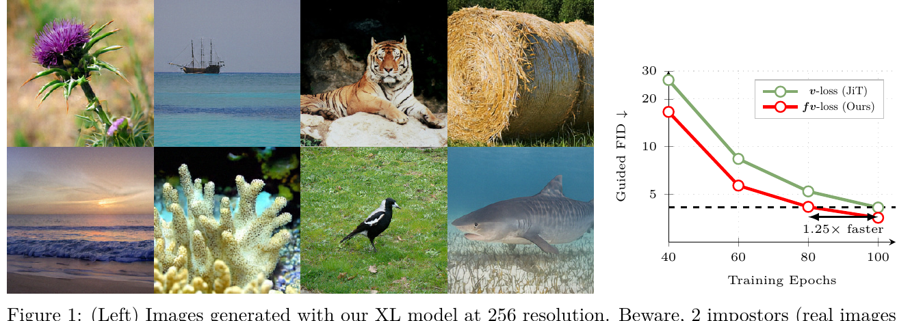
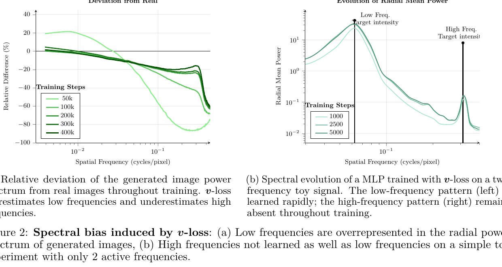
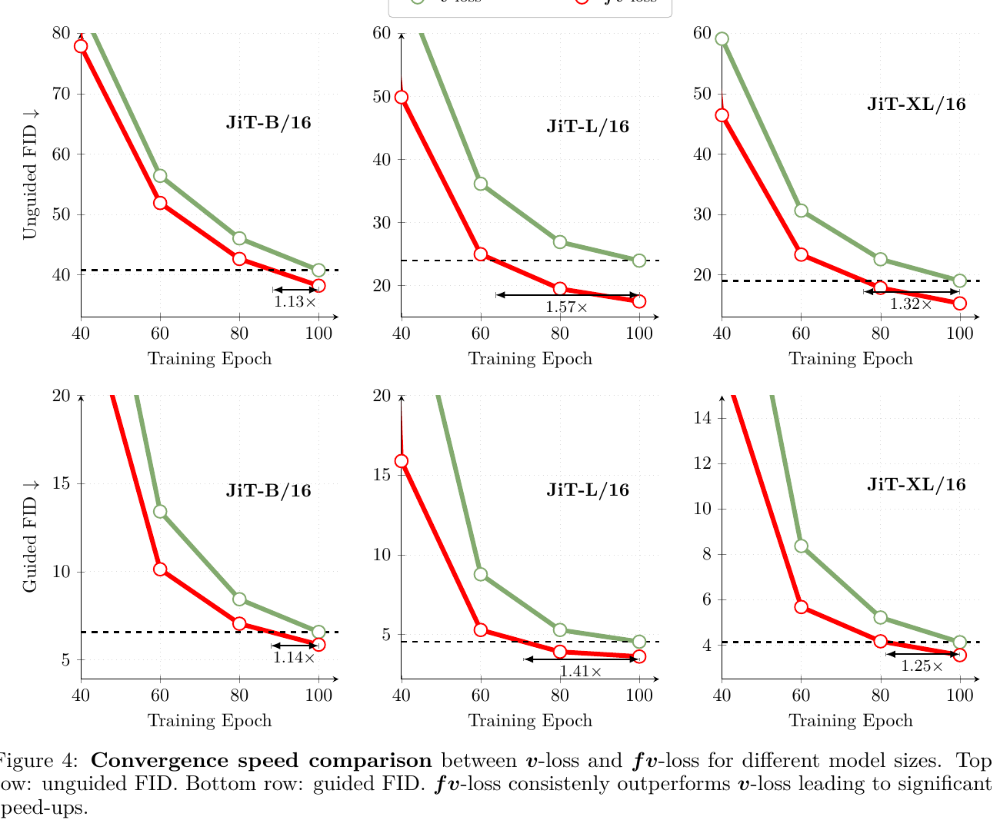
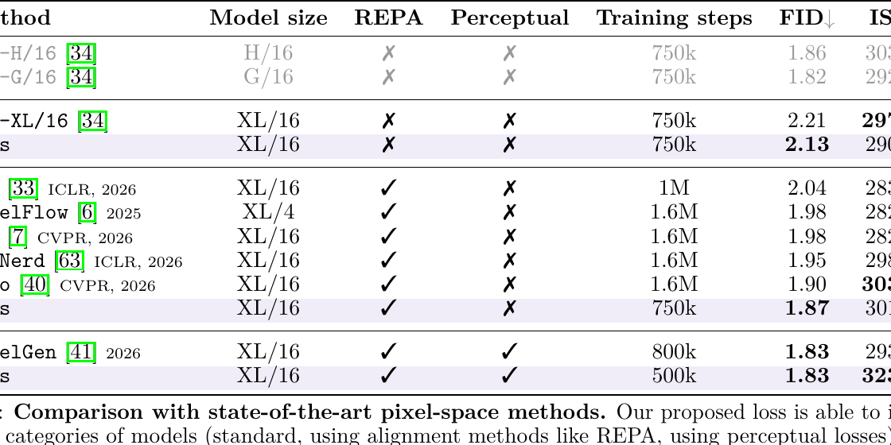
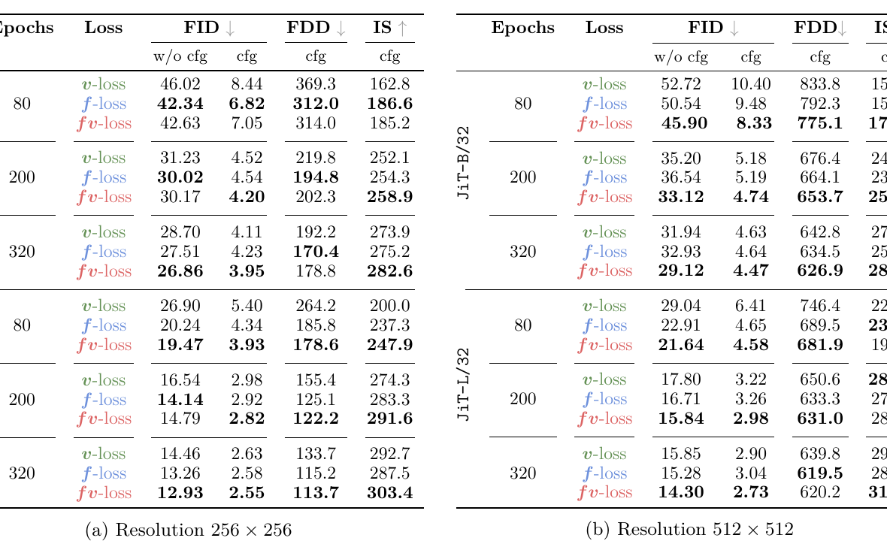
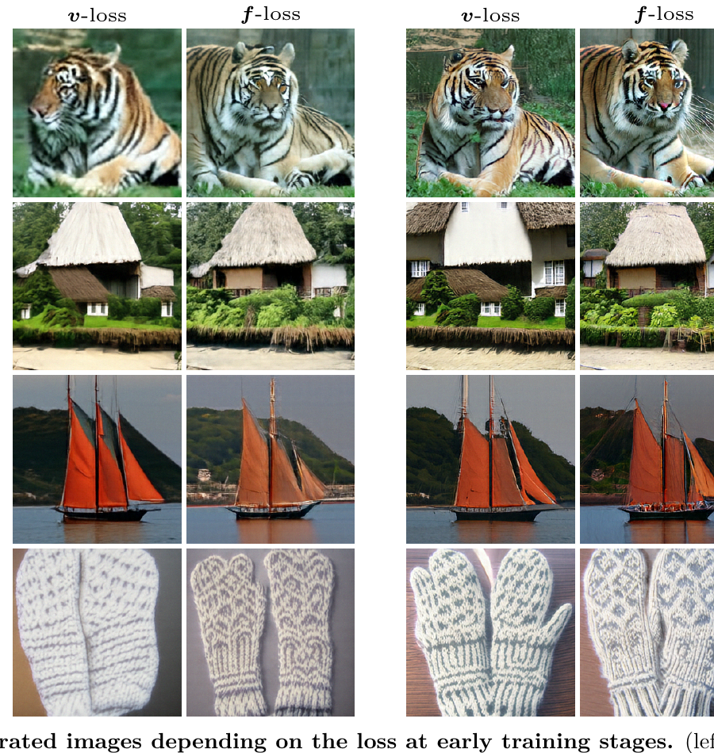

出发点：为什么像素空间流模型「学得慢」
先看这篇论文的封面图。八张 256² 的图里藏着 2 张 ImageNet 真图当「冒充者」——你大概率一眼看不出来。这正是 XL 模型用作者的 fv-loss 训出来的效果；而右边那条 FID 曲线才是重点：同样的架构、同样的训练预算，只是换了个损失函数，收敛就快了 1.25×。

问题的根子在自然图像的频谱结构。任何一张自然图像做傅里叶变换，功率谱大致按 \(1/f^2\) 衰减：绝大部分能量堆在低频（全局形状、大色块），而人眼真正在乎的东西——纹理、边缘、毛发、织物花纹——是稀疏地散布在高频，能量很小但感知权重很大。论文开头用老虎举例：轮廓（低频）告诉你「这是只老虎」，而条纹（高频）才让它「看起来真实」。
矛盾就在这：像素空间的重建损失（v-loss）用的是 \(\ell_2\)，对所有空间位置的误差一视同仁。由于低频能量本身就大 100×、1000×，它天然主导了梯度信号，于是模型把算力优先砸在「已经很容易的低频」上，高频细节被一路拖延。作者把这件事命名为目标函数层面的频谱失衡（objective-level spectral imbalance）——注意，这不是网络结构的锅（很多前作去改架构、加多尺度分支、加频率支路），而是损失函数自己写歪了。
一句话动机：能量分布 ≠ 感知重要性。\(\ell_2\) 忠实地跟着能量走，于是也就系统性地忽视了高频。f-loss 要做的，是在损失里把「能量」换成「每个频段等权」。
术语速查
在进正文之前，先把这篇论文（及其所在的像素空间生成圈）高频出现的黑话一句话讲清：
| 术语 | 一句话解释 |
|---|---|
| 流匹配 / Flow Matching | 学一个速度场 \(\bm v_\theta\)，把噪声沿直线「流」成数据；训练即回归这个速度。扩散模型的近亲。 |
| v-loss | 速度预测损失。本文把它等价改写成带 \(1/(1-t)^2\) 权重的 x-回归（直接预测干净图 \(\bm x_1\)）。是本文的 baseline。 |
| f-loss | 本文主角。Focal Log-Frequency Loss——在傅里叶谱上做对数压缩 + 焦点归一化的频域损失。 |
| fv-loss | f-loss 与 v-loss 的两段式调度组合：早期偏频域，后期切像素域。本文最终交付的训练配方。 |
| JiT | "Just image Transformers"，一个直接在像素空间（不进 VAE latent）跑流匹配的 Transformer 架构，是本文的主实验载体。 |
| REPA | 用预训练视觉编码器（如 DINO）的特征对齐生成模型内部表征的一种对齐损失，能把特征推向富含高频的 DINO 空间。 |
| FID / FDD / IS | 生成质量指标：FID 基于 InceptionV3 特征，FDD 基于 DINOv2 特征，IS 衡量类别可辨识度。前二者越低越好，IS 越高越好。 |
| 径向平均功率谱 | 把 2D 傅里叶谱按频率半径取环形平均，得到「功率 vs 空间频率」的一维曲线，用来诊断频谱偏差。 |
| Nyquist 频率 | 采样能表达的最高频率（0.5 cycles/pixel）。高频缺陷在这里最严重。 |
方法：把损失从「像素域」搬到「对数频域」
2.1 baseline：v-loss 其实是加权 x-回归
流匹配学一个速度场 \(\bm v_\theta(\bm x_t, t)\)，把噪声 \(\bm x_0 \sim p_0\) 沿 ODE \(\frac{d\bm x_t}{dt} = \bm v_\theta\) 输运到数据 \(\bm x_1 \sim p_1\)。用线性插值 \(\bm x_t = (1-t)\bm\epsilon + t\,\bm x_1\)，真值速度是个常数 \(\bm v^\* = \bm x_1 - \bm\epsilon\)，于是标准目标是：
但在高维像素空间里直接回归高方差的速度场容易「灾难性失败」。所以作者跟 JiT 一样把它重参数化成 x-预测：用 \(\bm v = \frac{\bm x_1 - \bm x_t}{1-t}\)、\(\bm v_\theta = \frac{\bm x_\theta - \bm x_t}{1-t}\) 代入，速度损失就变成一个加权的 x-回归损失——这就是本文口径下的 v-loss：
—— 翻译：别去回归「速度」，直接让网络预测「干净图 $\bm x_1$」，误差按 $1/(1-t)^2$ 加权（越接近数据端 $t\to 1$、权重越大，逼模型在终点处对齐）。这个 $\ell_2$ 就是所有麻烦的源头——它在空间域，对每个像素等权，于是被低频能量主导。
2.2 诊断：v-loss 到底歪在哪
作者不是拍脑袋，而是量出来的。用训好的 v-loss 模型生成一批图，算径向平均功率谱，跟真实 ImageNet 图对比（图 2a）：

两个证据：
- 成品的频率签名：低频、中频被高估约 20%，高频被低估，且缺口随频率单调增大，逼近 Nyquist 时达到 -60%。到训练末期低频能自愈，高频依然缺。
- 训练动态：用一个小 MLP 去拟合「只有一个低频 + 一个高频」的合成信号，追踪整个训练过程的频谱——低频那根峰几乎瞬间学会，高频那根峰从头到尾几乎不涨（图 2b）。这坐实了神经网络的「谱偏置（spectral bias）」：频率 \(k\) 的学习速度约按 \(1/k\) 衰减。
作者由此下了个很强的判断：早期就把算力全砸低频，会让模型生成高频的能力「不可逆地损失，后期也补不回来」。所以修正必须发生在早期。
2.3 f-loss：对数频域上的焦点损失
核心公式（Eq. 3）。设 \(\mathcal{F}\) 是 2D 离散傅里叶变换，\(e_{u,v} = |\mathcal{F}_{\text{pred}}(u,v) - \mathcal{F}_{\text{target}}(u,v)|\) 是每个频率 \((u,v)\) 上的残差幅值：
—— 翻译：把误差搬到傅里叶谱上逐频率算，然后乘三个系数。① $1/(1-t)^2$：跟 v-loss 一样的时间步权重，原样保留，保证训练动态一致。② $e/\max e$：**焦点归一化**——每个样本内部，用「本样本最大残差」把所有残差压到 [0,1]，让当前错得最狠的频率获得最大关注（focal 的本意），且用 stop-gradient 冻住（纯粹当数据依赖的系数，不回传）。③ $\log(1+e)$：**对数压缩**——防止任何单一频率（尤其是能量爆表的低频）独吞损失。
对数压缩是这篇论文最漂亮的一笔，作者给了个几何解释：\(\log\) 把频谱层级「线性化」了——每一次频率翻倍（一个倍频程 / octave）在总损失里拿到等量权重，而不再服从 \(1/f^2\) 的自然衰减。这可以看成 Laplacian 金字塔分解的连续版：金字塔给每个 octave 相同的结构重要性，\(\log\) 在连续频域上做同一件事。
直觉对照：v-loss 是「按能量分配注意力」，低频能量大就多看；f-loss 是「按倍频程分配注意力」，低频高频一人一票。前者迎合 \(1/f^2\)，后者对抗 \(1/f^2\)。
2.4 fv-loss：早频域、晚像素域的两段式调度
但 f-loss 不能单独用到底。作者的观察（图 3、后面的表 2）很清楚：f-loss 早期碾压 v-loss，但后期被 v-loss 反超。原因是 f-loss 对相位不敏感——傅里叶幅值对了，但相位（边缘/纹理的精确空间位置）没锁死；而 v-loss 直接监督像素值，天生擅长把边缘钉到精确像素位置。所以理想配方是先用 f-loss 把频率快速拉齐，再切回 v-loss 做相位/边缘精修：
—— 翻译：两个损失加权求和，权重随训练进度 $s$ 走一条 sigmoid 曲线：$\lambda(s)$ 从 1 平滑衰减到 0，中心对准「f-loss 与 v-loss 的 FID 曲线交叉点 $s^\star$」。即早期 $w_f\approx 1$（几乎纯频域），晚期 $w_v\approx 1$（几乎纯像素）。这条调度出来的损失，作者叫 fv-loss。

关键 \(s^\star\) 不需要网格搜索：直接取 f-loss 与 v-loss 两条 FID 曲线在验证集上的交叉点即可。这让整套方法几乎零调参。
实验结果：跨尺度、跨架构的一致加速
3.1 和 SOTA 比：同架构更快、更好

三档对照都成立（表 1）：
- 裸架构：JiT-XL/16，同样 750k 步，Ours 2.13 vs JiT 2.21。
- 叠 REPA 对齐损失：Ours 在 750k 步就到 1.87，反超 DeCo 花 1.6M 步的 1.90——不到一半算力追平并超越。REPA 本身把特征推向富高频的 DINO 空间，f-loss 仍能叠加受益，说明二者正交。
- 叠感知损失：Ours 500k 步的 FID 1.83 = PixelGen 800k 步的 1.83，但 IS 323.4 vs 293.6，且零架构改动。
3.2 拆解 v / f / fv：谁在什么阶段赢

表 2 把「早频域、晚像素域」这个主张钉死了（以 256² 为例）：
- 早期（80 轮）：f-loss 全面领先。JiT-B/16 无引导 FID 42.34（f）vs 46.02（v），引导 6.82 vs 8.44；JiT-L/16 无引导 20.24 vs 26.90。
- 末期（320 轮）：fv-loss 集大成。JiT-B/16 无引导 26.86（fv）vs 28.70（v），引导 3.95 vs 4.11；JiT-L/16 无引导 12.93 vs 14.46，引导 2.55 vs 2.63。FDD、IS 同向改善。
3.3 泛化到别的架构：不只吃 JiT

- 换 PixelDiT 架构（表 3）：fv-loss 在 200k/400k/600k 步分别是 10.18 / 6.88 / 5.92，对比复现的 v-loss 15.09 / 10.60 / 10.25——约 2× 加速，且 PixelDiT 本身带 REPA，说明收益不绑定 JiT。
- 调度消融（表 4）：sigmoid 的 \(\lambda(s)\)（早频晚像素）在末期拿到最优 FID 3.95；把它反过来（早像素晚频率）是最差档之一（4.30）——「必须早期做频谱平衡」这个方向是刚性的，不能反。有趣的是恒定 \(w_v=10\) 拿到最高 IS 285.88，说明 IS 和 FID 的最优权重未必一致。
- 算力账（正文 §4.2）：f-loss 每步多一次 2D FFT，JiT-B 400k 步总墙钟仅 +4%（453 vs 432 min）；fv-loss 因两个损失都要反传是 +14%（492 min）。100 分钟刻度上 v-loss 因步数多暂时领先，但 fv-loss 在 200 分钟处反超，300 分钟后加速完全盖过额外开销。
实现细节：从祖先代码看 f-loss 到底怎么算
代码状态：本文代码与模型「承诺开源」但截至精读时尚未放出。不过 f-loss 是 ICCV 2021 Focal Frequency Loss（EndlessSora/focal-frequency-loss）的直系后代——作者在正文把 \(\log(1+e)\)、焦点归一化、stop-gradient 逐一对上了那份实现里的选项。所以下面用祖先仓库的真实代码锚定「每个数学部件对应哪段张量操作」，再把本文 Eq. 3 的差异写成带标注的等价伪代码。
4.1 2D DFT：tensor2freq
repo/focal_frequency_loss/focal_frequency_loss.py:L37-L57 — 把图像张量做正交归一化的 2D FFT，拆成实部/虚部
def tensor2freq(self, x):
# crop image patches
patch_factor = self.patch_factor
_, _, h, w = x.shape
patch_list = []
patch_h = h // patch_factor
patch_w = w // patch_factor
for i in range(patch_factor):
for j in range(patch_factor):
patch_list.append(x[:, :, i*patch_h:(i+1)*patch_h, j*patch_w:(j+1)*patch_w])
y = torch.stack(patch_list, 1)
# perform 2D DFT (real-to-complex, orthonormalization)
freq = torch.fft.fft2(y, norm='ortho')
freq = torch.stack([freq.real, freq.imag], -1)
return freq
这就是 Eq. 3 里的 \(\mathcal{F}\)。norm='ortho' 保证 Parseval 意义下频域/空域能量守恒——这一步是频域损失能和像素损失可比的前提。本文对 pred 和 target 各做一次，得到 \(\mathcal{F}_{\text{pred}}\)、\(\mathcal{F}_{\text{target}}\)。
4.2 焦点权重 + 对数压缩 + stop-gradient：loss_formulation
repo/focal_frequency_loss/focal_frequency_loss.py:L59-L98 — 在线计算频谱权重矩阵（残差幅值 → log → 逐样本归一化 → detach），再和频率距离做 Hadamard 积
def loss_formulation(self, recon_freq, real_freq, matrix=None):
if matrix is not None:
weight_matrix = matrix.detach()
else:
# 残差幅值 e_{u,v} = |F_pred - F_target|^alpha （alpha=1）
matrix_tmp = (recon_freq - real_freq) ** 2
matrix_tmp = torch.sqrt(matrix_tmp[..., 0] + matrix_tmp[..., 1]) ** self.alpha
# 对数压缩：log(1 + e) ← 本文把它从「可选」升级成核心
if self.log_matrix:
matrix_tmp = torch.log(matrix_tmp + 1.0)
# 焦点归一化：e / max(e)，逐样本
if self.batch_matrix:
matrix_tmp = matrix_tmp / matrix_tmp.max()
else:
matrix_tmp = matrix_tmp / matrix_tmp.max(-1).values.max(-1).values[:, :, :, None, None]
matrix_tmp[torch.isnan(matrix_tmp)] = 0.0
matrix_tmp = torch.clamp(matrix_tmp, min=0.0, max=1.0)
weight_matrix = matrix_tmp.clone().detach() # ← stop-gradient
# 频率距离（平方欧氏）
tmp = (recon_freq - real_freq) ** 2
freq_distance = tmp[..., 0] + tmp[..., 1]
# 动态谱加权（Hadamard 积）
loss = weight_matrix * freq_distance
return torch.mean(loss)
对照 Eq. 3，三个部件一一落地：
torch.sqrt(real² + imag²)= 残差幅值 \(e_{u,v}\)；torch.log(matrix_tmp + 1.0)= 对数压缩 \(\log(1+e)\)；matrix_tmp / matrix_tmp.max(...)= 焦点归一化 \(e/\max e\)；.clone().detach()= stop-gradient（把权重当纯数据系数）。
4.3 discrepancy：本文 Eq. 3 ≠ 祖先代码的默认形态（重要）
这里有个必须点破的结构差异。祖先代码里，被惩罚的量是平方频率距离 freq_distance，而 \(\log\) / 归一化只作用在权重矩阵上（loss = weight_matrix * freq_distance）。而本文 Eq. 3 把 \(\log(1+e)\) 直接当成被惩罚的距离项，权重则是 \(e/\max e\) 与 \(1/(1-t)^2\)：
| 被惩罚的距离 | 乘的权重 | |
|---|---|---|
| ICCV'21 默认 | \(\;e^2\;\)（平方残差） | 归一化后的（可选 log）幅值 |
| 本文 Eq. 3 | \(\;\log(1+e)\;\)（对数残差） | \(\dfrac{e}{\max e}\cdot\dfrac{1}{(1-t)^2}\) |
也就是说，本文把「对数」从权重挪进了惩罚项本身，并额外接上了流匹配特有的 \(1/(1-t)^2\) 时间步权重。所以严格说，f-loss 是这份祖先实现的改写变体，不是把它某组开关打开就能得到。下面是本文 Eq. 3 的等价伪代码。
等价伪代码 — 非原文逐字（据本文 Eq. 3 重构，锚定实现方式）
# 等价伪代码：本文 f-loss（Eq. 3），非官方代码
def f_loss(x_pred, x_target, t): # x_*: (N,C,H,W)
Fp = torch.fft.fft2(x_pred, norm='ortho') # 2D DFT
Ft = torch.fft.fft2(x_target, norm='ortho')
e = (Fp - Ft).abs() # 逐频率残差幅值 e_{u,v}
# 焦点权重：逐样本用最大残差归一化，stop-grad（纯数据依赖系数）
w_focal = (e / e.amax(dim=(-2,-1), keepdim=True).clamp_min(1e-8)).detach()
# 时间步权重：与 v-loss 一致，t→1 处加大
w_time = 1.0 / (1.0 - t).clamp_min(0.05) ** 2 # 0.05 为除零保护（示意）
# 对数压缩作为被惩罚的距离项：每个倍频程等权
penalty = torch.log1p(e) # log(1 + e)
return (w_time * w_focal * penalty).sum(dim=(-2,-1)).mean()
4.4 两段式 sigmoid 调度
等价伪代码 — 非原文逐字（据本文 Eq. 4 + §3.3 重构）
# 等价伪代码：fv-loss 调度（Eq. 4），非官方代码
def lambda_schedule(step, s_star, tau):
# sigmoid 从 1 衰减到 0，中心对准 f/v 两条 FID 曲线的交叉点 s*
return torch.sigmoid(-(step - s_star) / tau)
def fv_loss(x_pred, x_target, t, step, s_star, tau):
wf = lambda_schedule(step, s_star, tau) # 早期≈1
wv = 1.0 - wf # 晚期≈1
return wf * f_loss(x_pred, x_target, t) + wv * v_loss(x_pred, x_target, t)
至此，5 个以上可复现的实现要点：① norm='ortho' 的 2D FFT 是频/空可比的前提；② 焦点权重逐样本用 amax 归一化并 detach；③ 对数压缩落在惩罚项而非权重（本文相对祖先的关键改写）；④ \(1/(1-t)^2\) 时间步权重从 v-loss 原样继承、需除零保护；⑤ 调度中心 \(s^\star\) 取 FID 曲线交叉点、免网格搜索；⑥ f-loss 每步多一次 2D FFT，实测墙钟 +4%（单 f）/ +14%（fv）。
唯一实打实的 discrepancy 已在 4.3 指出：本文 Eq. 3 与祖先仓库的默认损失形态不一致（对数项的位置 + 时间步权重），需按伪代码重构，不能直接 FocalFrequencyLoss(log_matrix=True) 得到。等官方代码放出后应以官方为准。
批判与延伸
5.1 这篇好在哪
- 诊断先于方法：图 2 那套「径向功率谱偏差 + 双频玩具信号」把「v-loss 系统性欠高频」量化得干净利落，不是拿方法硬套故事。
- 几乎零调参：\(s^\star\) 取 FID 曲线交叉点，不做网格搜索；drop-in 替换，零架构改动。这对「损失函数类」论文是很强的卖点——可迁移性高。
- 跨尺度/跨架构/跨分辨率一致：B/L/XL、256²/512²、JiT/PixelDiT 全都成立，且能和 REPA、感知损失正交叠加。这种「一致性」比单点刷 SOTA 更有说服力。
5.2 值得追问的弱点
- 对数压缩的「等权」是拍脑袋的先验：\(\log\) 让每个倍频程等权，但「等权」凭什么就是最优？人眼的对比敏感度函数（CSF）是带通的（中频最敏感，极高频反而不敏感）。用 \(\log\) 一刀切等权，可能在极高频上过度投入。作者没有和「按 CSF 加权」或「幂律加权 \(f^{\alpha}\)」做对比。
- 相位问题只是「绕过」而非「解决」：f-loss 只管幅值、不管相位，作者的对策是「后期切回 v-loss 补相位」。但这等于承认频域损失有个结构性短板；有没有直接的相位感知频域损失（如复数域损失）？没讨论。
- \(s^\star\)「取交叉点」需要先各训一版 f-loss 和 v-loss：所谓免调参，其实前提是你已经有两条 FID 曲线——对大模型这本身就是可观的算力。真正的「一次成型」调度（如与 loss ratio 自适应挂钩）会更实用。
- 只在类条件 ImageNet 上验证：没有文本到图像（T2I）、没有更高分辨率（>512²）、没有视频。像素空间 T2I 正是当前热点，缺这块证据让「通用性」打了折扣。
- 代码未放出：Eq. 3 与祖先实现存在 4.3 指出的差异，复现有歧义空间（对数项位置、\(s^\star\)/\(\tau\) 具体取值、时间步除零阈值都未给数）。
5.3 交叉验证：和相邻工作对照着读
f-loss 处在「像素空间流匹配 + 频率视角」的交叉口。把它和本站已精读的几篇放一起，能看出这条线的共识与分歧：
| 工作 | 核心主张 | 和 f-loss 的关系 | 结论异同 |
|---|---|---|---|
| mfd-2026（MFD） | 不比「瞬时速度」比「平均速度」，把时间积分当低通滤波器给流匹配蒸馏降方差 | 同样把频域视角引入流匹配，但作用点相反：MFD 在时间轴上做低通（平滑速度），f-loss 在空间频率轴上做升高频（补细节） | 同：都认为朴素 \(\ell_2\) 速度回归的频谱性质有问题。异：MFD 主动低通去方差（蒸馏场景），f-loss 主动提高频补细节（训练场景）——同一把「傅里叶尺子」量出两个方向的病 |
| asymflow-2026（AsymFlow） | 用秩-非对称速度参数化，把 latent 流匹配 lift 到像素空间 | 都在攻「像素空间流匹配为什么难训」；AsymFlow 从架构/参数化下刀，f-loss 从损失函数下刀 | 同：都承认像素空间比 latent 难、高频是痛点。异：正交解法——AsymFlow 改速度场的秩结构，f-loss 改目标函数的频谱权重。理论上可叠加 |
| latent-to-pixel-2026（L2P 对比） | 同问题（latent→pixel）不同刀法的横向对比 | 提供「像素空间生成为何难」的问题地图 | 同：印证 f-loss 诊断的「高频欠学习」是这条线的公认瓶颈，不是个例 |
| pixrestore-2026（PixRestore） | 扔掉 VAE 和 T2I 先验，从零训像素空间 DiT 做图像修复 | 同为「纯像素空间 DiT」阵营；修复任务对高频（纹理/边缘）更敏感 | 异：PixRestore 靠架构和任务设计吃高频，未用频域损失——f-loss 若移植过去理论上能直接受益，是个未验证的白地 |
分歧的可能成因：MFD 与 f-loss 看似矛盾（一个低通、一个提高频），其实作用在不同轴——MFD 的低通是沿时间/ODE 轨迹平滑（降蒸馏方差），f-loss 的提高频是沿空间频率补细节（治训练偏置）。二者不冲突，甚至可能互补：用 f-loss 训 base、用 MFD 蒸馏。这正是一个明确的组合白地。
5.4 研究启发（可迁移的套路）
- 「能量分布 ≠ 优化重要性」是个通用透镜：任何 \(\ell_2\) 目标，只要目标信号的能量谱不均匀（图像 \(1/f^2\)、音频、点云、甚至 LLM 的 token 频率），都可能存在「高能量维度主导梯度、低能量但重要的维度被饿死」。在变换域（傅里叶/小波/PCA）里重新分配损失权重，是一招可复用的通法。
- stop-gradient 的焦点权重 = 免费的课程学习：\(e/\max e\) 用「当前错得最狠的地方」当权重且不回传，本质是数据驱动的自适应课程——不引入新参数、不改架构，却能动态把注意力导向欠学习区域。这个「用 detach 的残差当权重」的 trick 可迁移到任何回归损失。
- 反直觉点：修正必须发生在早期，且方向不可逆。表 4 里「早像素晚频率」是最差档之一——不是「频域损失有益」这么简单，而是时序关键：谱平衡是早期的「奠基工程」，晚了就补不回来（图 2b 的高频峰再也起不来）。这提示很多「训练技巧」的收益可能高度依赖施加的时间窗口，值得当成一个独立超参来 ablate。
- 「先粗后精」的调度哲学：早期用一个低保真但覆盖全频段的目标（f-loss）铺开，晚期切一个高保真但易偏科的目标（v-loss）精修——这个「先广度、后深度」的两段式，可迁移到蒸馏、对齐、RLHF 等任何「早期探索 vs 晚期利用」的训练场景。
讨论 / Comments
评论托管在本仓库的 GitHub Discussions, 需 GitHub 账号。